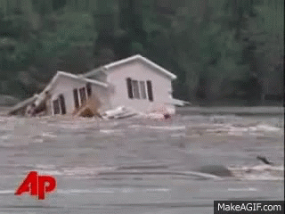

Flooding is experienced all over the globe and for a variety of reasons — but why exactly does flooding occur? There are several human causes of flooding, including poorly designed infrastructure. There are also natural reasons flooding happens.
Here are eleven of the most common causes of flooding, both natural and human-induced:

- Heavy Rains
- Overflowing Rivers
- Broken Dams
- Urban Drainage Basins
- Storm Surges and Tsunamis
- Channels with Steep Sides
- A Lack of Vegetation
- Melting Snow and Ice
- Clogged Drainages
- Dam Breakage
- Melting of the Glaciers and Mountain Tops
1. Heavy Rains
The simplest explanation for flooding is heavy rains. No matter where you live, you are surrounded by infrastructure and systems designed to move rainwater into appropriate basins and reservoirs. In most cases, the infrastructure does its job, and you never have to think about where the rain goes when it runs off.
When it rains heavily, however, those systems are overwhelmed, and that water doesn’t drain nearly as quickly as it needs to. In short, the drainage systems back up, and the water rises — sometimes into homes. This typically happens only in cases of sustained heavy rains over a long period.
2. Overflowing Rivers
You do not necessarily need to have heavy rains to experience flooding in your area. For example, if you live along a river and areas upstream from you experience heavy rains, it could lead to a serious overflow where you live. Most larger rivers include a series of dams to help manage large amounts of rainfall, and most river systems are managed by government authorities.
Sometimes, however, those authorities have to make tough decisions about how to operate dams. They often can manage the water and prevent flooding altogether — but not always.
3. Broken Dams
Much of America’s infrastructure was built in the 20th century, so it is getting old. When heavy rains come, and water levels rise, aging dams can fail and unleash torrents of water on unsuspecting households.
This is part of what happened after Hurricane Katrina hit New Orleans in 2005. Levees failed and made the flooding far worse than it would have been otherwise. While we have come to depend on 20th-century architecture, and much of it does its job well, there is always a possibility that a structure will fail.
4. Urban Drainage Basins
Many of our cities are made of mostly concrete and other impermeable material. When you have an urban drainage basin that is made of concrete, there is no ground for water to sink into. So, when those drainage basins fill up, it is going to mean flooding for low-lying areas.
This is mostly the case in large urban areas — think Houston and Los Angeles. When heavy rains strike, the basins used to drain them cannot always handle the load.
5. Storm Surges and Tsunamis
Rain is not always the culprit when it comes to flooding. Storm surges related to hurricanes and other storms can lead to significant flooding, as can tsunamis that are sometimes caused by underwater earthquakes.
Given modern technology, we often know about storm surges and tsunamis before they arrive, but this is not always the case. For example, in 2004, an earthquake off the coast of Indonesia created a tsunami that gave little warning before coming ashore.
6. Channels with Steep Sides
Flooding often occurs when there is fast runoff into lakes, rivers and other reservoirs. This is often the case with rivers and other channels that feature steep sides. It is a similar issue to having a lack of vegetation, which is explained in more detail below.
7. A Lack of Vegetation
Vegetation can help slow runoff and prevent flooding. When there is a lack of vegetation, however, there is little to stop water from running off. This can be a bit of a conundrum after a drought.
While area residents likely welcome the rain, the lack of vegetation after the drought can cause flash flooding. This does not always happen given that basins and reservoirs are close to empty, but it can occur in cases of extreme rains following long periods of drought.
8. Melting Snow and Ice
A winter of heavy snow and other precipitation can lead to a spring of flooding. After all, that snow and ice have to go somewhere when they melt. Most mountainous areas experience relatively consistent snowfall totals from year to year, but an unusually heavy winter of precipitation can spell bad news for low-lying areas around the mountains when spring hits.
The good news is that sustained winter precipitation provides a long lead time to prepare for potential flooding. That is a silver lining at the very least.
These are just a few examples of common causes of floods, but there does not need to be an incredible weather event for you to experience flooding at your home. You can experience devastating flooding simply due to a clogged or broken pipe as well as other plumbing issues. No matter how or why you experience a flood, you need a qualified water restoration professional with quality tools to help you get your home back into working order again.
9. Clogged Drainages
Flooding also takes place when snowmelt or rainfall runoff cannot be channeled appropriately into the drainage systems forcing the water to flow overland. Clogged or lack of proper drainage system is usually the cause of this type of flooding.
The areas remain flooded until the stormwater systems or waterways are rectified. Instances where the systems or water ways are not rectified, the areas remain flooded until the excess water evaporates or is transpired into the atmosphere by plants.
10. Dam Breakage
Dams are man-made structures used to hold water from flowing down from a raised ground. The potential energy stored in the dam water is used to generate electricity. At times, the walls can become weak and break because of overwhelming carriage capacity. Due to this reason, breakage of the dam can cause extensive flooding in the adjacent areas.
Flooding occurs when the embankments built along the sides of the river to stop high water from flowing onto the land breaks. Sometimes, the excess water from the dam is deliberately released from the dam to prevent it from breaking thereby causing floods.
11. Melting of the Glaciers and Mountain Tops
In the cold regions, ice and snows build up during the winters. When the temperature rises in summer, the accumulated snows and ice are subjected to melting resulting in vast movements of water into lands that are normally dry. Regions with mountains that have ice on top of them also experience the same outcome when the atmospheric temperature rises. This type of flooding is usually termed as snowmelt flood.